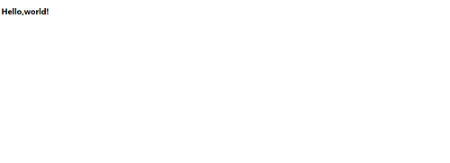
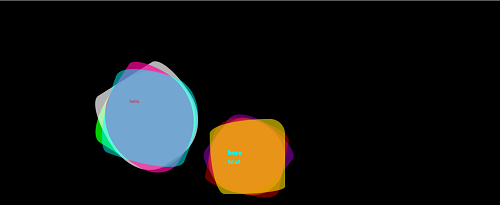

新規タブをかっこよくする拡張機能を作ろう
こんにちはrihitoです。
今回は新規タブをかっこよくする拡張機能を作っていきたいと思います。
なぜ、この記事を書いたか
単に新規タブの見た目を変えるchrome拡張機能を作る情報が少ないと思ったからです。
なので情報が少ないなら自分で書いちゃえ
というかんじで書書きました。
まあ、自分のためのメモでもあるんですが。
準備
以下のファイルを作ります
・
|____manifest.json
|____index.html
|____style.css
作り始めてみる
まずmanifest.jsonです。
これは、chrome拡張機能の設定ファイルで、
拡張機能の名前やIconなどを決めることができます。
index.htmlとmain js は、新規タブの画面です。
では、さっそくmanifest.jsonを書いていきたいと思います。
manifest.json
{
"name": "新規タブをかっこよくする",
"version": "1.0.0",
"description": "新規タブをかっこよくする",
"manifest_version": 2,
"chrome_url_overrides": {
"newtab": "index.html"
},
"author": "your name"
}
"chrome_url_overrides": {
"newtab": "index.html"
},
これは、新規タブをindex.htmlにするよ-ということです。
では、htmlを書いていきたいと思います。
<!DOCTYPE html>
<html>
<head>
<meta charset="UTF-8">
<link rel="stylesheet" href="style.css">
<title>newtab</title>
</head>
<body>
<h1>Hello,world!</h1>
</body>
</html>
chormeで動かす
まず、
chrome://extensions/にアクセス
デベロッパーモードをONにする。
パッケージ化されていない拡張機能を読み込むを押す
manifest.jsonなどがあるフォルダを選択する
そして、Ctrl+Tを押すと新規タブにHello,worldと表示されます。

このように新規タブをhtmlで記述することが出来るのです。
つまらないからきれいにしてみる
いきなりソースコードです。
inde.html
<!DOCTYPE html>
<html>
<head>
<meta charset="UTF-8">
<link rel="stylesheet" href="style.css">
</head>
<body bgcolor="#000000">
<div class="rota1">
<div class="ball1"></div>
<div class="ball2"></div>
<div class="ball3"></div>
<div class="ball4"></div>
<div class="text"><h2>here text</h2></div>
</div>
<div class="rota2">
<div class="ball5"></div>
<div class="ball6"></div>
<div class="ball7"></div>
<div class="ball8"></div>
<div class="text2">hello</div>
</div>
</body>
</html>
style.css
.ball1{
width:200px;
height:200px;
background: #ff8900;
animation: rotation1 3s linear infinite;
border-radius: 50% 50% 50% 70%/50% 50% 70% 60%;
opacity: 0.5;
position:absolute; top:100px; left:100px;
}
.ball2{
width:200px;
height:200px;
background: #d000ff;
animation: rotation2 3s linear infinite;
border-radius: 20% 80% 30% 30%/60%;
opacity: 0.4;
position:absolute; top:100px; left:100px;
}
.ball3{
width:200px;
height:200px;
background: #ff0500;
animation: rotation1 3s linear infinite;
border-radius: 40% 90% 60% 90%/20% 20% 50% 30%;
opacity: 0.4;
position:absolute; top:100px; left:100px;
}
.ball4{
width:200px;
height:200px;
background: #ffe500;
animation: rotation2 4s linear infinite;
border-radius: 80% 20% 70% 20%/20% 20% 10% 80%;
opacity: 0.6;
position:absolute; top:100px; left:100px;
}
.ball5{
width:250px;
height:250px;
background: #00ff00;
animation: rotation1 3s linear infinite;
border-radius: 40% 20% 50% 60%/50% 50% 60% 60%;
opacity: 0.8;
position:absolute; top:100px; left:100px;
}
.ball6{
width:250px;
height:250px;
background: #ffffff;
animation: rotation2 3s linear infinite;
border-radius: 80% 60% 30% 30%/90%;
opacity: 0.7;
position:absolute; top:100px; left:100px;
}
.ball7{
width:250px;
height:250px;
background: #ff05a0;
animation: rotation1 3s linear infinite;
border-radius: 50% 90% 60% 90%/40% 80% 20% 90%;
opacity: 0.7;
position:absolute; top:100px; left:100px;
}
.ball8{
width:250px;
height:250px;
background: #00ffff;
animation: rotation2 4s linear infinite;
border-radius: 60% 40% 80% 20%/20% 50% 20% 80%;
opacity: 0.5;
position:absolute; top:100px; left:100px;
}
.text{
color:#00ffff;
position:absolute; top:150px; left:150px;
animation: rotation2 4s linear infinite;
}
.text2{
color:#ff0000;
position:absolute; top:170px; left:170px;
}
.rota1{
position:absolute; top:300px; left:400px;
animation: rotation1 4s linear infinite;
}
.rota2{
position:absolute; top:90px; left:175px;
}
@keyframes rotation1{
0%{transform:rotate(0);}
100%{transform:rotate(360deg);}
}
@keyframes rotation2{
0%{transform:rotate(0);}
100%{transform:rotate(-360deg);}
}
